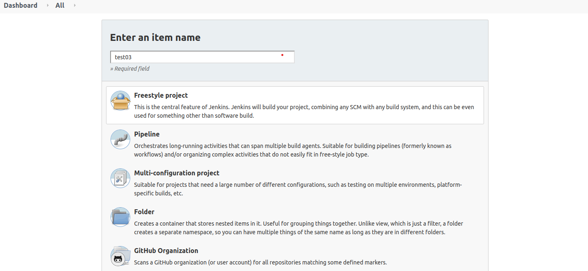
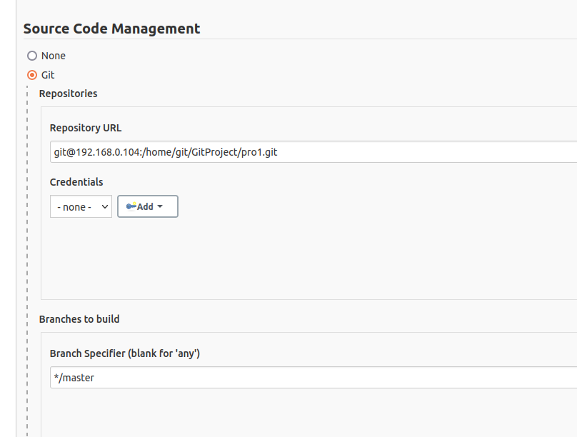
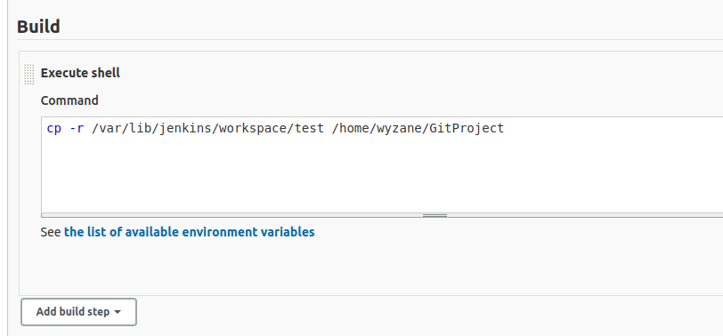

jenkins是一个持续集成和自动化部署的工具，使用它可以快速方便的部署项目。下面介绍下 jenkins 的安装、git中央仓库的创建，及使用 jenkins 实现自动化部署。
以下例子中使用的服务器是 Ubuntu 18.04。
安装jenkins
1
2
3
4
5
6
7
8
9
10
11
12
13
14
15
16
17
18
| 1. 去官网下载 jdk: jdk-8u251-linux-i586.tar.gz
2. 解压并配置环境变量，在配置文件 /etc/profile 中加入以下内容（路径可根据自己情况更改）：
export JAVA_HOME=/usr/local/java/jdk1.8.0
export JRE_HOME=${JAVA_HOME}/jre
export CLASSPATH=.:${JAVA_HOME}/lib:${JRE_HOME}/lib:$CLASSPATH
export JAVA_PATH=${JAVA_HOME}/bin:${JRE_HOME}/bin
export PATH=$PATH:${JAVA_PATH}
3. 执行 source /etc/profile，并执行 java 查看是否安装成功
4. 安装成功后，配置软连接 ln -s /usr/local/java/jdk1.8.0/bin/java /usr/bin/java
5. 安装 jenkins
1) wget -q -O - https://pkg.jenkins.io/debian/jenkins.io.key | sudo apt-key add -
2) sudo sh -c 'echo deb http://pkg.jenkins.io/debian-stable binary/ > /etc/apt/sources.list.d/jenkins.list'
3) sudo apt-get update
4) sudo apt-get install jenkins
6. 安装完成后，查看jenkins的状态，jenkins默认运行在8080端口（可以在 /etc/default/jenkins文件中修改默认端口）
service jenkins status
service jenkins start
service jenkins restart
|
git中央仓库的搭建
1
2
3
4
5
6
7
8
9
10
11
12
13
14
| 1. 安装 git
sudo apt install git
2. 添加 git 用户，添加时输入密码
adduser git
3. 服务器打开 RSA 验证： vim /etc/ssh/sshd_config，添加下面的配置
RSAAuthentication yes
PubkeyAuthentication yes
AuthorizedKeysFile .ssh/authorized_keys
4. 切换到git用户，
1）创建目录：mkdir .ssh
2）生成密钥对：ssh-keygen -t rsa -C "12345678@qq.com"
5. 在 .ssh 目录下添加 authorized_keys 文件，并把客户端的公钥添加到文件中
6. 创建一个裸仓库：git init --bare pro1.git
7. 在客户端克隆仓库： git clone git@192.168.0.104:/home/git/pro1.git
|
使用jenkins实现自动化部署
实现功能：使用jenkins将代码从一台服务器拉取到另一台服务器上，并将代码移动到指定目录中。
上面步骤中创建的 git 中央仓库就是此次例子中的源代码仓库。
配置 jenkins 前，我们需要先修改 jenkins 的配置文件，以便使用 jenkins 用户执行 shell 脚本时不会出现权限问题。修改步骤如下：
1
2
3
4
5
6
7
8
9
10
11
12
13
14
15
16
17
| 1. 修改配置文件 /etc/default/jenkins，让 jenkins 以 root 用户执行脚本
JENKINS_USER="root"
JENKINS_GROUP="root"
2. 修改 jenkins 相关目录的属性
chown -R root:root /var/lib/jenkins
chown -R root:root /var/cache/jenkins
chown -R root:root /var/log/jenkins
3. 重启 jenkins 服务: service jenkins restart
重启后，可能会遇到以下几个问题：
1）mesg: ttyname failed: Inappropriate ioctl for device
处理：使用 root 用户修改文件 /root/.profile，将 mesg n || true 替换成 tty -s && mesg n。
2）daemon: fatal: refusing to execute unsafe program: /usr/bin/java (/usr/local/java/jdk1.8.0/bin is group and world writable)
处理：执行 chmod -R 755 /usr/local/java/jdk1.8.0/bin
4. 执行以上步骤后，重启服务器和 jenkins 服务就行了，下面就能使用 jenkins 执行 shell 脚本了。
|
启动 jenkins 服务后，访问 127.0.0.1:8080，输入密码后进入jenkins。配置步骤如下：
首先，在 Dashboard 上创建一个 Item，输入 Item 名称并选择 Freestyle project。

选择好以后，点击 OK。进入 Item 后，主要配置以下两个部分。
然后，配置源代码的 git 地址，如下图：

配置 git 地址前，需要先在 jenkins 用户下创建秘钥（命令：ssh-keygen -t rsa -C “12345678@qq.com“），然后将生成的公钥放入 192.168.0.104 git用户下的 authorized_keys 文件中，否则会报错提示没有权限。
然后，再配置构建时要执行的 shell 脚本，如下图：

上面的 shell 脚本就一行，将远程服务器上 git 仓库的代码拉取后（test目录，默认情况下，jenkins 会把拉取的代码放到其 workspace 目录下），再将代码放到 /home/wyzane/GitProject 目录下。
上图的 shell 脚本很简单，若需要执行其他的一些部署、重启服务等命令，可以再根据需要添加。
最后，可以保存并 Build 一下 Item，上面例子中控制台的输出日志如下：
1
2
3
4
5
6
7
8
9
10
11
12
13
14
15
16
17
18
19
20
21
22
23
24
25
26
| Started by user wyzane
Running as SYSTEM
Building in workspace /var/lib/jenkins/workspace/test
[WS-CLEANUP] Deleting project workspace...
[WS-CLEANUP] Deferred wipeout is used...
The recommended git tool is: NONE
No credentials specified
Cloning the remote Git repository
Cloning repository git@192.168.0.104:/home/git/GitProject/pro1.git
> git init /var/lib/jenkins/workspace/test # timeout=10
Fetching upstream changes from git@192.168.0.104:/home/git/GitProject/pro1.git
> git --version # timeout=10
> git --version # 'git version 2.17.1'
> git fetch --tags --progress -- git@192.168.0.104:/home/git/GitProject/pro1.git +refs/heads/*:refs/remotes/origin/* # timeout=10
> git config remote.origin.url git@192.168.0.104:/home/git/GitProject/pro1.git # timeout=10
> git config --add remote.origin.fetch +refs/heads/*:refs/remotes/origin/* # timeout=10
Avoid second fetch
> git rev-parse refs/remotes/origin/master^{commit} # timeout=10
Checking out Revision 8d114db052b5c4914e56a1e5848a2c5df9bca69e (refs/remotes/origin/master)
> git config core.sparsecheckout # timeout=10
> git checkout -f 8d114db052b5c4914e56a1e5848a2c5df9bca69e # timeout=10
Commit message: "add test03"
> git rev-list --no-walk 8d114db052b5c4914e56a1e5848a2c5df9bca69e # timeout=10
[test] $ /bin/sh -xe /tmp/jenkins7411340475787087463.sh
+ cp -r /var/lib/jenkins/workspace/test /home/wyzane/GitProject
Finished: SUCCESS
|
jenkins 中还有很多其他配置项和插件，在后面还会整理一部分它们的使用方法。